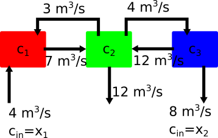

Gauss Elimination#
Uncovering the solution of linear algebra equations#
In the previous notebook, 01_Linear-Algebra, you turned sets of equations into linear algebra problems in the form
\(\mathbf{Ax} = \mathbf{b}\)
Our equations youre composed of three groups of variables and the dimensions of unknown vector = degrees of freedom of the system.
Given set of known outputs, \(b_{1},~b_{2},~...b_{N}\)
set of equations with constants, \(A_{11},~A_{12},\dots,~A_{nn}\)
unknown inputs, \(x_{1},~x_{2},~...x_{N}\),
Example#
Consider a problem with 2 DOF:
\(x+3y=1\)
\(2x+y=1\)
\(\left[ \begin{array}{cc} 1 & 3 \\ 2 & 1 \end{array} \right] \left[\begin{array}{c} x \\ y \end{array}\right]= \left[\begin{array}{c} 1 \\ 1\end{array}\right]\)
The solution for \(x_{1}\) and \(x_{2}\) is the intersection of two lines:
import numpy as np
import matplotlib.pyplot as plt
plt.style.use('fivethirtyeight')
x = np.linspace(-1,1)
y1 = (1-x)/3
y2 = (1-2*x)
plt.plot(x,y1, label='eqn 1')
plt.plot(x,y2, label='eqn 2')
plt.xlabel('x')
plt.ylabel('y')
plt.legend();
A=np.array([[1,3],[2,1]])
b=np.array([1,1])
xsol = np.linalg.solve(A,b)
plt.plot(x,y1, label='eqn 1')
plt.plot(x,y2, label='eqn 2')
plt.plot(xsol[0],xsol[1],'x',markersize=30,label='solution (x={},y={})'.format(*xsol))
plt.xlabel('x')
plt.ylabel('y')
plt.legend(loc='center left', bbox_to_anchor=(1,0.5));
Graphical interpretation of Ill-conditioned#
In this form, you can see what ill-conditioning looks like in terms of intersecting lines
The specification of independent equations is best illustrated using dependent equations:
\((1+\delta)x+y = 3\)
\(2x+(2+\delta)y=6\)
d=2e-16
A=np.array([[1+d,1],[2,2+d]])
b=np.array([3,6])
xsol = np.linalg.solve(A,b)
print(xsol)
x = np.linspace(xsol[0]-0.5,xsol[0]+0.5,100)
d=3e-16
y1 = (3-(1+d)*x)
y2 = (6-2*x)/2/(1+d)
plt.plot(x,y1,'s-', label='eqn 1')
plt.plot(x,y2, label='eqn 2')
plt.plot(xsol[0],xsol[1],'+',markersize=30,label='solution')
plt.xlabel('x')
plt.ylabel('y')
plt.legend(loc='center left', bbox_to_anchor=(1, 0.5));
[-1. 4.]
Discussion#
The intersection between the equations lines 1 and 2 seems to occur everywhere. Why is there still a single solution?
3 Degrees of Freedom#
For a \(3\times3\) matrix, the solution is the intersection of the 3 planes.
\(10x+2y+z=1\)
\(2x+y+z=1\)
\(x+2y+10z=1\)
\(\left[ \begin{array}{cc} 10 & 2 & 1\\ 2 & 1 & 1 \\ 1 & 2 & 10\end{array} \right] \left[\begin{array}{c} x \\ y \\ z \end{array}\right]= \left[\begin{array}{c} 1 \\ 1 \\ 1\end{array}\right]\)
from mpl_toolkits.mplot3d import axes3d
X,Y = np.meshgrid(np.linspace(-1,1,10),np.linspace(0,3,10))
Z1 = 1-10*X-2*Y
Z2 = 1-2*X-Y
Z3 = (1-X-2*Y)/10
fig = plt.figure(figsize=(7,6))
ax = fig.add_subplot(111, projection='3d')
ax.plot_wireframe(X,Y,Z1,color='g',alpha=0.5)
ax.plot_wireframe(X,Y,Z2,color='b',alpha=0.5)
ax.plot_wireframe(X,Y,Z3,color='r',alpha=0.5)
x=np.linalg.solve(np.array([[10,2, 1],[2,1, 1],[ 1, 2, 10]]),np.array([1,1,1]));
ax.scatter(x[0],x[1],x[2],s=600,c='k',marker='x')
plt.title('solution at (x={}, y={}, z={})'.format(*x))
ax.set_xlabel('x ')
ax.set_ylabel(' y')
ax.set_zlabel(' z');
plt.tight_layout()
Exercise#
Create a set of 3 equations and 3 unknowns where two of the equations are multiples of each other e.g. equation 2 = 2*(equation 1). Plot the resulting 3D planes using the same code you used above, it is copied here:
X,Y = np.meshgrid(np.linspace(-1,1,10),np.linspace(0,3,10))
# Define your Z1,Z2,Z3 based upon your chosen equations
# Z1
# Z2
# Z3
fig = plt.figure(figsize=(7,6))
ax = fig.add_subplot(111, projection='3d')
ax.plot_wireframe(X,Y,Z1,color='g',alpha=0.5)
ax.plot_wireframe(X,Y,Z2,color='b',alpha=0.5)
ax.plot_wireframe(X,Y,Z3,color='r',alpha=0.5)
x=np.linalg.solve(np.array([[10,2, 1],[2,1, 1],[ 1, 2, 10]]),np.array([1,1,1]));
ax.scatter(x[0],x[1],x[2],s=600,c='k',marker='x')
ax.set_xlabel(' x1')
ax.set_ylabel('x2')
ax.set_zlabel(' x3');
plt.tight_layout()
N>3 Degrees of Freedoms#
After 3 DOF problems, the solutions are described as hyperplane intersections. Which are even harder to visualize. It helps to develop rules for 2 DOF and 3 DOF problems that you can generalize into higher dimensions. Consider these two versions of a system of equations
1:
\(10x_{1}+2x_{2}+x_{3}=1\)
\(2x_{1}+x_{2}+x_{3}=1\)
\(x_{1}+2x_{2}+10x_{3}=1\)
2:
\(10x_{1}+2x_{2}+x_{3}=1\)
\(\frac{3}{5}x_{2}+\frac{4}{5}x_{3}=\frac{4}{5}\)
\(7.5x_{3}=-\frac{3}{2}\)
Version 2 is much easier to solve than version 1. The amazing thing is that version 2 represents the same equation set as version 1. How can this be possible? Well, lets take a look at a simpler, 2 DOF, example before you dive into 3, 4, and more independent equations and unknowns.
Consider two masses connected by springs with forces applied.

You want to find the position of each mass when the system is at rest so you have two equations and two unknowns
\(-k_1 x_1 -k_2 x_1 + k_2 x_2 = F_1\)
\(k_2 x_1 -k_2 x_2 -k_3 x_2 = F_2\)
Or, plugging in the given values \(k_1=100~N/m,~k_2=300~N/m,~k_3=150~N/m,~F_1=10~N,~F_2=20~N\)
\(-400x_1+300x_2 = 10\)
\(300x_1-450x_2 = 20\)
Now, I can multiply both sides of equation (1) by -300/400=-3/4
(a) \(300x_1-225x_2 = -7.5\)
\(300x_1-450x_2 = 20\)
Then, subtract equation (1(a)) from (2) and replace 1(a) with 1:
\(-400x_1+300x_2 = 10\)
(2-1(a)) \(0x_1-225x_2 = 27.5\)
Solving equations (1) and (2a-1)#
Now, I can solve the second equation
\(x_2 = -0.122~m\)
and substitute \(x_2\) into equation (1)
\(-400x_1 + 300(-0.122) =10\)
\(x_1 = -0.11665~m\)
Gauss elimination#
The process you used for the previous spring-mass example, is called Gauss elimination. You combine the set of equations in a clever way such that the final equation has one variable, then you use a backward-substitution method to solve for each of the unknown variables. Let’s consider the 3D case next,
Solving sets of equations systematically#
You take the \(3\times3\) matrix and the length 3 vector and combine all of the known constants as such,
\(\left[ \begin{array}{ccc|c} & A & & y \\ 10 & 2 & 1 & 1\\ 2 & 1 & 1 & 1 \\ 1 & 2 & 10 & 1\end{array} \right]. \)
Ay= np.array([[10,2,1,1],[2,1,1,1],[1,2,10,1]],dtype=float)
print(Ay)
[[10. 2. 1. 1.]
[ 2. 1. 1. 1.]
[ 1. 2. 10. 1.]]
Now, subtract \(1/5*A[0,:]\) from \(A[1]\).
\(\left[ \begin{array}{ccc|c} & A & & y \\ 10 & 2 & 1 & 1\\ 0 & 3/5 & 4/5 & 4/5 \\ 1 & 2 & 10 & 1\end{array} \right] \)
Ay[1,:]= Ay[1,:]-0.2*Ay[0,:]
print(Ay)
[[10. 2. 1. 1. ]
[ 0. 0.6 0.8 0.8]
[ 1. 2. 10. 1. ]]
Now, subtract \(1/10*A[0,:]\) from \(A[2,:]\).
\(\left[ \begin{array}{ccc|c} & A & & y \\ 10 & 2 & 1 & 1\\ 0 & 3/5 & 4/5 & 4/5 \\ 0 & 1.8 & 9.9 & 0.9\end{array} \right] \)
Ay[2,:]= Ay[2,:]-0.1*Ay[0,:]
print(Ay)
[[10. 2. 1. 1. ]
[ 0. 0.6 0.8 0.8]
[ 0. 1.8 9.9 0.9]]
Finally, you can substract \(1.8/0.6*A[1,:]\) from $A[2,:]
\(\left[ \begin{array}{ccc|c} & A & & y \\ 10 & 2 & 1 & 1\\ 0 & 3/5 & 4/5 & 4/5 \\ 0 & 0 & 7.5 & -1.5\end{array} \right] \)
Ay[2,:]= Ay[2,:]-1.8/0.6*Ay[1,:]
print(Ay)
[[ 1.00000000e+01 2.00000000e+00 1.00000000e+00 1.00000000e+00]
[ 0.00000000e+00 6.00000000e-01 8.00000000e-01 8.00000000e-01]
[ 0.00000000e+00 2.22044605e-16 7.50000000e+00 -1.50000000e+00]]
Back substitution#
You have three equations and three unknowns. You can solve for \(x_3\) in equation (3) easily. Then, you can solve for \(x_2\) in equation (2) using equation (3)’s solution for \(x_3\). Finally, you can solve for \(x_1\) using equation (1) and the solutions for \(x_2\) and \(x_3\).
(3), \(7.5x_{3}=-1.5\)
\(x_{3}=-\frac{1}{5}\)
(2), \(3/5x_{2}+4/5(-1/5)=1\)
\(x_{2}=\frac{8}{5}\)
(1), \(10x_{1}+2(8/5)+1(-\frac{1}{5})=1\)
\(x_1 = -1/5\)
Automate Gauss Elimination#
You can automate Gauss elimination with a function whose input is A and y:
x=GaussNaive(A,y)
def GaussNaive(A,y):
'''GaussNaive: naive Gauss elimination
x = GaussNaive(A,b): Gauss elimination without pivoting.
solution method requires floating point numbers,
as such the dtype is changed to float
Arguments:
----------
A = coefficient matrix
y = right hand side vector
returns:
---------
x = solution vector
Aug = augmented matrix (used for back substitution)'''
[m,n] = np.shape(A)
Aug = np.block([A,y.reshape(n,1)])
Aug = Aug.astype(float)
if m!=n: error('Matrix A must be square')
nb = n+1
# Gauss Elimination
for k in range(0,n-1):
for i in range(k+1,n):
if Aug[i,k] != 0.0:
factor = Aug[i,k]/Aug[k,k]
Aug[i,:] = Aug[i,:] - factor*Aug[k,:]
# Back substitution
x=np.zeros(n)
for k in range(n-1,-1,-1):
x[k] = (Aug[k,-1] - Aug[k,k+1:n]@x[k+1:n])/Aug[k,k]
return x,Aug
A=np.array([[10,2, 1],[2,1, 1],[ 1, 2, 10]])
y=np.array([1,1,1])
x, Aug = GaussNaive(A,y)
print('x= \t\tAug=')
for i in range(len(x)):
print('{:.2f}\t\t'.format(x[i]) , Ay[i])
x= Aug=
-0.20 [10. 2. 1. 1.]
1.60 [0. 0.6 0.8 0.8]
-0.20 [ 0.00000000e+00 2.22044605e-16 7.50000000e+00 -1.50000000e+00]
Revisit Example with Mixing Tanks#

In the diagram above you have three tanks of water that are mixing two concentrations of salt water with \(c_1~mg/m^3\) entering tank 1 and \(c_2~mg/m^3\) entering tank three. The outlet is located on the middle tank 2, but the concentration is unknown. In 01_Linear-Algebra, you used a fixed value for \(x_1=5~mg/m^3\) and \(x_2=1~mg/m^3\). Let’s examine three cases for
\(x_1=5~mg/m^3,~and~x_2=1~mg/m^3\)
\(x_1=50~mg/m^3,~and~x_2=10~mg/m^3\)
\(x_1=1~mg/m^3,~and~x_2=5~mg/m^3\)
Following the same procedure as 01_Linear-Algebra, you can create the system of equations in the following forms for (1-3):
\(\left[ \begin{array}{ccc} -7 & 3 & 0 \\ 7 & -19 & 12 \\ 0 & 4 & -12 \end{array} \right] \left[\begin{array}{c} c_{1} \\ c_{2} \\ c_{3}\end{array}\right]=\left[\begin{array}{c} -20 \\ 0 \\ -8\end{array}\right]\)
\(\left[ \begin{array}{ccc} -7 & 3 & 0 \\ 7 & -19 & 12 \\ 0 & 4 & -12 \end{array} \right] \left[\begin{array}{c} c_{1} \\ c_{2} \\ c_{3}\end{array}\right]=\left[\begin{array}{c} -200 \\ 0 \\ -80\end{array}\right]\)
\(\left[ \begin{array}{ccc} -7 & 3 & 0 \\ 7 & -19 & 12 \\ 0 & 4 & -12 \end{array} \right] \left[\begin{array}{c} c_{1} \\ c_{2} \\ c_{3}\end{array}\right]=\left[\begin{array}{c} -4 \\ 0 \\ -40\end{array}\right]\)
Our main system of equations, \(\mathbf{A}\), is unchanged. The right-hand-side, \(\mathbf{b}\) changes for each new set of concentrations you specify. Let’s see what the solutions and augmented matrices are based upon the GaussNaive function
A=np.array([[-7,3,0],[7,-19,12],[0,4,-12]])
b1=np.array([-20,0,-8])
b2=np.array([-200,0,-80])
b3=np.array([-4,0,-40])
x1,Aug1 = GaussNaive(A,b1)
x2,Aug2 = GaussNaive(A,b2)
x3,Aug3 = GaussNaive(A,b3)
print('example 1')
print('x= \t\tAug=')
for i in range(len(x)):
print('{:.2f}\t\t'.format(x[i]) , Ay[i])
print('\nexample 2')
print('x= \t\tAug=')
for i in range(len(x)):
print('{:.2f}\t\t'.format(x[i]) , Ay[i])
print('\nexample 3')
print('x= \t\tAug=')
for i in range(len(x)):
print('{:.2f}\t\t'.format(x[i]) , Ay[i])
example 1
x= Aug=
-0.20 [10. 2. 1. 1.]
1.60 [0. 0.6 0.8 0.8]
-0.20 [ 0.00000000e+00 2.22044605e-16 7.50000000e+00 -1.50000000e+00]
example 2
x= Aug=
-0.20 [10. 2. 1. 1.]
1.60 [0. 0.6 0.8 0.8]
-0.20 [ 0.00000000e+00 2.22044605e-16 7.50000000e+00 -1.50000000e+00]
example 3
x= Aug=
-0.20 [10. 2. 1. 1.]
1.60 [0. 0.6 0.8 0.8]
-0.20 [ 0.00000000e+00 2.22044605e-16 7.50000000e+00 -1.50000000e+00]
Solving the same problem with different inputs#
LU decomposition#
Look at the form of Aug in solutions 1-3. The only difference is in the last column, the \(\mathbf{b}\). Is there a way that you can save our work from example 1 and apply it to examples 2-3? The trouble is that \(\mathbf{b}\) goes through the same changes that our augmented form of \(\mathbf{A}\) goes through so you need to keep track some how.
This process is called LU decomposition, where the L refers to lower triangular matrix and the U refers to upper triangular matrix. You frame the problem in this way
\(\mathbf{A} = \mathbf{LU}\)
where the diagonal elements of \(\mathbf{L}\) are 1 and the elements of \(\mathbf{U}\) are the left-hand side of the Gauss-elimination augmented matrix (note: there is more than one method to determine LU matrices. This method is the Doolittle Decomposition). Therefore, in the case of this mixing tank example
\(\mathbf{A} = \left[ \begin{array}{ccc} -7 & 3 & 0 \\ 7 & -19 & 12 \\ 0 & 4 & -12 \end{array} \right]= \left[ \begin{array}{ccc} 1 & 0 & 0 \\ L_{21} & 1 & 0 \\ L_{31} & L_{32} & 1 \end{array} \right] \left[ \begin{array}{ccc} -7 & 3 & 0 \\ 0 & -16 & 12 \\ 0 & 0 & -9 \end{array} \right]\)
This leaves three unknown values, \(L_{21},~L_{31},~and~L_{32}\). In general, for \(n\)-equations, there are \(n(n-1)/2\) unknowns. Before you develop a method to calculate \(L_{21},~L_{31},~and~L_{32}\), let’s observe what you can do with the results. In the case of the mixing tank problem the factorization is as such
\(\mathbf{A} = \left[ \begin{array}{ccc} -7 & 3 & 0 \\ 7 & -19 & 12 \\ 0 & 4 & -12 \end{array} \right]= \left[ \begin{array}{ccc} 1 & 0 & 0 \\ -1 & 1 & 0 \\ 0 & -1/4 & 1 \end{array} \right] \left[ \begin{array}{ccc} -7 & 3 & 0 \\ 0 & -16 & 12 \\ 0 & 0 & -9 \end{array} \right]\)
L=np.array([[1,0,0],[-1,1,0],[0,-1/4,1]])
U=np.array([[-7,3,0],[0,-16,12],[0,0,-9]])
Exercise#
Use the @-symbol to confirm LU = A.
L@U
Now, you can rewrite our problem \(\mathbf{Ax} = \mathbf{b}\) as \(\mathbf{LUx} = \mathbf{b}\). This may not see helpful at first, but take a look at the new system of equations that you can solve
\(\mathbf{Ly} = \mathbf{b}\)
\(\mathbf{Ux} = \mathbf{y}\)
These equations work because our original problem was stated as
\(\mathbf{LUx-b} = \mathbf{0}\)
So, if you pull out \(\mathbf{L}\),
\(\mathbf{L(Ux-y)}=\mathbf{0}\),
where \(\mathbf{Ly}=\mathbf{b}\).
in the case of the mixing containers case 1: \((x_1 =5~mg/m^3,~x_2=1~mg/m^3)\)
\(\left[ \begin{array}{ccc} 1 & 0 & 0 \\ -1 & 1 & 0 \\ 0 & -1/4 & 1 \end{array} \right]\left[\begin{array}{c} y_{1} \\ y_{2} \\ y_{3}\end{array}\right]= \left[\begin{array}{c} -20 \\ 0 \\ -8\end{array}\right] \)
\(\left[ \begin{array}{ccc} -7 & 3 & 0 \\ 0 & -16 & 12 \\ 0 & 0 & -9 \end{array} \right] \left[\begin{array}{c} c_{1} \\ c_{2} \\ c_{3}\end{array}\right]= \left[\begin{array}{c} y_{1} \\ y_{2} \\ y_{3}\end{array}\right]\)
You can solve these equations without Gauss elimination. You just need to use a forward substitution for \(\mathbf{Ly}=\mathbf{b}\) and a backward substitution for \(\mathbf{Ux}=\mathbf{y}\).
def solveLU(L,U,b):
'''solveLU: solve for x when LUx = b
x = solveLU(L,U,b): solves for x given the lower and upper
triangular matrix storage
uses forward substitution for
1. Ly = b
then backward substitution for
2. Ux = y
Arguments:
----------
L = Lower triangular matrix
U = Upper triangular matrix
b = output vector
returns:
---------
x = solution of LUx=b '''
n=len(b)
x=np.zeros(n)
y=np.zeros(n)
# forward substitution
for k in range(0,n):
y[k] = b[k] - L[k,0:k]@y[0:k]
# backward substitution
for k in range(n-1,-1,-1):
x[k] = (y[k] - U[k,k+1:n]@x[k+1:n])/U[k,k]
return x
%%time
b1=np.array([-20,0,-8])
b2=np.array([-200,0,-80])
b3=np.array([-4,0,-40])
c1 = solveLU(L,U,b1)
c2 = solveLU(L,U,b2)
c3 = solveLU(L,U,b3)
CPU times: user 58 µs, sys: 54 µs, total: 112 µs
Wall time: 96.3 µs
%%time
b1=np.array([-20,0,-8])
b2=np.array([-200,0,-80])
b3=np.array([-4,0,-40])
c1,aug = GaussNaive(A,b1)
c2,aug = GaussNaive(A,b2)
c3,aug = GaussNaive(A,b3)
CPU times: user 158 µs, sys: 145 µs, total: 303 µs
Wall time: 258 µs
Comparing Gauss elimination to LU solution method#
In the last two comparisons, it is not always immediately obvious that the LU-decomposition solution is faster. So, let’s increase the odds. Let’s create a surface plot of the mass flow of salt coming out of the mixing tanks \((c_2*12~m^3/s)\) as a function of concentrations flowing into tanks 1 and 3
\(\dot{m}_{out} = f(x_1,~x_2)\)
\(x_1=[0...50]~mg/m^3\)
\(x_2=[0...50]~mg/m^3\)
N=51 # meshgrid is NxN
x1=np.linspace(0,50,N)
x2=np.linspace(0,50,N)
X1,X2 = np.meshgrid(x1,x2)
%%time
C = np.zeros(X1.shape)
for i in range(N):
for j in range(N):
b = np.array([-4*X1[i,j],0,-8*X2[i,j]])
c = solveLU(L,U,b)
C[i,j]=c[1]
CPU times: user 38.4 ms, sys: 11.9 ms, total: 50.3 ms
Wall time: 44 ms
%%time
C = np.zeros(X1.shape)
for i in range(N):
for j in range(N):
b = np.array([-4*X1[i,j],0,-8*X2[i,j]])
c,aug = GaussNaive(A,b)
C[i,j]=c[1]
CPU times: user 69.5 ms, sys: 939 µs, total: 70.5 ms
Wall time: 69.5 ms
plt.contourf(X1,X2,C*12)
plt.xlabel('x1 concentration (mg/m3)')
plt.ylabel('x2 concentration (mg/m3)')
cbar=plt.colorbar()
cbar.set_label('mg/s')
plt.title('Salt mass flow out \nof tank 2 (mg/s)');
Efficient storage of a matrix#
The LU decomposition provides an efficient method to store matrices for use repeated solutions. In the example with the mixing tank, if the flow rates between each tank are fixed, then the matrix \(\mathbf{A}\) remains unchanged. The only variables are the salt concentrations entering tanks 1 and 3. By storing the matrix as its lower, \(\mathbf{L}\), and upper, \(\mathbf{U}\), decomposed form, you save ~50% of the computational time to get the same answers.
The matrix \(\mathbf{U}\) is the end result of the Gaussian elimination, but how can you create the matrix \(\mathbf{L}\)? You are using the Doolittle Decomposition, so each term on the diagonal is \(1\) and each off-diagonal component is the factor that you multiplied in the Gaussian elimination steps. Consider the two masses connected by springs with forces applied, as discussed earlier.
\(-400x_1+300x_2 = 10\)
\(300x_1-450x_2 = 20\)
\(\left[ \begin{array}{cc} -400 & 300 \\ 300 & -450 \end{array} \right]\left[\begin{array}{c} x_{1} \\ x_{2} \end{array}\right]= \left[\begin{array}{c} 10 \\ 20\end{array}\right]\)
Our matrix is as follows:
\(\mathbf{A}=\left[ \begin{array}{cc} -400 & 300 \\ 300 & -450 \end{array} \right]\)
Now you subtract \(-3/4(row~1)\) from \(row~2\) to create our \(\mathbf{U}\) matrix.
\(\mathbf{U}=\left[ \begin{array}{cc} -400 & 300 \\ 300-3/4\cdot400 & -450+3/4\cdot300 \end{array} \right]= \left[ \begin{array}{cc} -400 & 300 \\ 0 & -300 \end{array} \right]\)
The lower matrix stores this factor, \(-3/4\) in the second row, first column
\(\mathbf{L}=\left[ \begin{array}{cc} 1 & 0 \\ -3/4 & 1 \end{array} \right]\)
Exercise#
Confirm that
\(\mathbf{LU}=\mathbf{A}=\left[ \begin{array}{cc} 1 & 0 \\ -3/4 & 1 \end{array} \right]\left[ \begin{array}{cc} -400 & 300 \\ 0 & -300 \end{array} \right]= \left[ \begin{array}{cc} -400 & 300 \\ 300 & -450 \end{array} \right] \)
Create LU decomposition function#
Extending this to larger matrices, involves storing the factor for each step in the Gaussian elimination process in each row, column of the lower triangular \(\mathbf{L}-\) matrix. Take a look at the defined LUNaive function below
def LUNaive(A):
'''LUNaive: naive LU decomposition
L,U = LUNaive(A): LU decomposition without pivoting.
solution method requires floating point numbers,
as such the dtype is changed to float
Arguments:
----------
A = coefficient matrix
returns:
---------
L = Lower triangular matrix
U = Upper triangular matrix
'''
[m,n] = np.shape(A)
if m!=n: error('Matrix A must be square')
nb = n+1
# Gauss Elimination
U = A.astype(float)
L = np.eye(n)
for k in range(0,n-1):
for i in range(k+1,n):
if U[k,k] != 0.0:
factor = U[i,k]/U[k,k]
L[i,k]=factor
U[i,:] = U[i,:] - factor*U[k,:]
return L,U
Exercise#
Use the LUNaive function to create \(\mathbf{L}\) and \(\mathbf{U}\) matrices from the following three matrices. Confirm that \(\mathbf{LU}=\mathbf{A}\) in each case.
\(\mathbf{A} = \left[ \begin{array}{cc} 18 & -2 \\ -2 & 10 \end{array} \right]\)
\(\mathbf{A} = \left[ \begin{array}{ccc} 10 & 3 & 1 \\ 4 & 5 & 2 \\ 2 & 1 & 6 \end{array} \right]\)
\(\mathbf{A} = \left[ \begin{array}{cccc} -7 & 3 & 1 & 1 \\ 3 & -19 & 12 & 0 \\ 7 & 5 & -10 & 0 \\ 0 & 2 & 4 & -12 \end{array} \right]\)
Problem (Diagonal element is zero)#
All of the functions defined in this notebook are Naive (GaussNaive and LUNaive). They are called naive because if an element along the diagonal is 0, they will return NaN and if it is \(\lll 1\) it will introduce large errors, because you use the diagonal to calculate each \(factor =\frac{A_{ij}}{A_{ii}}\).
If a diagonal element is 0 or very small either:
no solution found
errors are introduced
Therefore, a robust method will use pivoting before applying Gauss elimination or LU factorization. Partial pivoting only reorganizes rows, leaving the columns unchanged. Full pivoting switches both rows and columns, thereby changing the order of equations and unknown variables. In practice, most functions that use Gauss elimination or LU factorization use partial pivoting: only switching rows.
Consider:
a. \(\left[ \begin{array}{cccc} 1e-15 & 3.0000 \\ 1.0000 & 1.0000 \end{array} \right] \left[ \begin{array}{c} x_{1} \\ x_{2} \end{array} \right]= \left[ \begin{array}{c} 2 \\ 1.0000 \end{array} \right]\)
b. \(\left[ \begin{array}{cccc} 0 & 2 & 3 \\ 4 & 6 & 7 \\ 2 & -3 & 6 \end{array} \right] \left[ \begin{array}{c} x_{1} \\ x_{2} \\ x_{3} \end{array} \right]= \left[ \begin{array}{c} 8 \\ -3 \\ 5\end{array} \right]\)
switch \(x_1\) and \(x_2\)
\(\left[ \begin{array}{cccc} 2 & 0 & 3 \\ 7 & 4 & 7 \\ -3 & 2 & 6 \end{array} \right] \left[ \begin{array}{c} x_{2} \\ x_{1} \\ x_{3} \end{array} \right]= \left[ \begin{array}{c} 8 \\ -3 \\ 5\end{array} \right]\)
Aa = np.array([[1e-15,3],[1,1]])
ba = np.array([2,1])
x_a,aug_a=GaussNaive(Aa,ba)
print(x_a)
print(aug_a)
[0. 0.66666667]
[[ 1.e-15 3.e+00 2.e+00]
[ 0.e+00 -3.e+15 -2.e+15]]
According to our GaussNaive solution, \(x_1=0\) and \(x_2=2/3\), but plugging these values into our original equation you get the following result:
a. \(\left[ \begin{array}{cccc} 1e-15 & 3.0000 \\ 1.0000 & 1.0000 \end{array} \right] \left[ \begin{array}{c} 0 \\ 2/3 \end{array} \right]= \left[ \begin{array}{c} 2 \\ 2/3 \end{array} \right]\neq \left[ \begin{array}{c} 2 \\ 1 \end{array} \right]\)
Aa@np.array([0,2/3])
array([2. , 0.66666667])
If you switch equation 1 with equation 2, the result is
a. \(\left[ \begin{array}{cccc} 1.0000 & 1.0000 \\ 1E-15 & 3.0000 \end{array} \right] \left[ \begin{array}{c} x_{1} \\ x_{2} \end{array} \right]= \left[ \begin{array}{c} 1.0000 \\ 2 \end{array} \right]\)
and the solution changes to \(x_1=1/3\) and \(x_2=2/3\). This solution satisfies our initial equations.
Aa = np.array([[1,1],[1e-19,3]])
ba = np.array([1,2])
x_a,aug_a=GaussNaive(Aa,ba)
print('solution=',x_a)
print('confirm b=Ax ->',Aa@np.array([1/3,2/3]))
solution= [0.33333333 0.66666667]
confirm b=Ax -> [1. 2.]
Now consider the (b) equations. You should notice the \(\mathbf{0}\) in the first diagonal position will be a problem. Really you can the first row with any other row to get a solution.
b. \(\left[ \begin{array}{cccc} \mathbf{0} & 2 & 3 \\ 4 & 6 & 7 \\ 2 & -3 & 6 \end{array} \right] \left[ \begin{array}{c} x_{1} \\ x_{2} \\ x_{3} \end{array} \right]= \left[ \begin{array}{c} 8 \\ -3 \\ 5\end{array} \right]\)
Ab = np.array([[0,2,3],[4,6,7],[2,-3,6]])
bb = np.array([8,-3,5])
x_b, aug_b = GaussNaive(Ab,bb)
print(x_b)
print(aug_b)
[nan nan nan]
[[ 0. 2. 3. 8.]
[ nan -inf -inf -inf]
[ nan nan nan nan]]
/tmp/ipykernel_2241/1119853754.py:24: RuntimeWarning: divide by zero encountered in scalar divide
factor = Aug[i,k]/Aug[k,k]
/tmp/ipykernel_2241/1119853754.py:25: RuntimeWarning: invalid value encountered in multiply
Aug[i,:] = Aug[i,:] - factor*Aug[k,:]
/tmp/ipykernel_2241/1119853754.py:24: RuntimeWarning: invalid value encountered in scalar divide
factor = Aug[i,k]/Aug[k,k]
Exercise#
Swap row 1 with either row 2 or row 3. What is the solution for x_b now? Show that if you plug in the solution for \([x_1,~x_2,~x_3]\) into the unpivoted \(\mathbf{A}\) that the result is \([8,~-3,~5]\).
Existing linear algebra functions in Python#
It is cumbersome to review each matrix that you want to solve for possible divide-by-zero errors and warnings. The function np.linalg.solve uses partial pivoting during the solution so that you do not get errors.
You can also use the existing scipy.linalg.lu function that performs partial pivoting to store our matrices in an efficient manner. Scipy.linalg contains all of the same functions that numpy.linalg contains, plus some extra useful functions, such as our LU decomposition function of interest, lu.
Because scipy.linalg.lu introduces pivoting, you have an extra matrix that is output, P. The P-matrix keeps track of pivoting during the creation of L and U. The result is that
\(\mathbf{PLU} = \mathbf{A}\)
so, if you want to use the LU solution, you have to add the matrix \(\mathbf{P}\) to our solution. The permutation matrix, rearranges rows and columns so if you want to undo this operation, you can use the transpose, \(\mathbf{P^T}\), switching each element’s row for its column index. The new solution is the following,
\(\mathbf{PLUx-b}=\mathbf{P^T PLy-P^Tb}=\mathbf{0}\)
\(\mathbf{Ly-P^Tb}=\mathbf{0}\)
\(\mathbf{Ux-y}=\mathbf{0}\)
In this form, you can use our original solveLU function
x = solveLU(L,U,P.T@b)
from scipy.linalg import lu
P,L,U = lu(Ab) # a built-in partial-pivoting LU decomposition function
print('P=\n',P)
print('L=\n',L)
print('U=\n',U)
P=
[[0. 0. 1.]
[1. 0. 0.]
[0. 1. 0.]]
L=
[[ 1. 0. 0. ]
[ 0.5 1. 0. ]
[ 0. -0.33333333 1. ]]
U=
[[ 4. 6. 7. ]
[ 0. -6. 2.5 ]
[ 0. 0. 3.83333333]]
# linear algebra solution with built-in numpy solver
np.linalg.solve(Ab,bb)
array([-5.42391304, 0.02173913, 2.65217391])
# our unmodified solveLU function (with forward and backward substitution)
# note: output vector b is replaced with P.T@b (transpose(P)*b)
solveLU(L,U,P.T@bb)
array([-5.42391304, 0.02173913, 2.65217391])
What you’ve learned#
Graph 2D and 3D linear algebra problems to identify a solution (intersections of lines and planes)
How to solve a linear algebra problem using Gaussian elimination (
GaussNaive)Store a matrix with an efficient structure LU decomposition where \(\mathbf{A=LU}\)
Solve for \(\mathbf{x}\) using forward and backward substitution (
solveLU)Create the LU Decomposition using the Naive Gaussian elimination process (
LUNaive)Why partial pivoting is necessary in solving linear algebra problems
How to use the existing
scipy.linalg.luto create the PLU decompositionHow to use the PLU efficient structure to solve our linear algebra problem (
solveLU)
References#
Chapra, Steven Applied Numerical Methods with Matlab for Engineers. ch 8. McGraw Hill.
Kiusalaas, Jaan Numerical Methods in Engineering with Python 3. ch 2. Cambridge University Press.
“Essence of Linear Algebra” 3 Blue 1 Brown Linear algebra series.